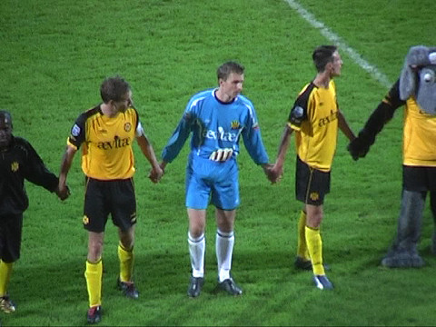

|
Roda JC - Heracles (2-1) 24 augustus 2007
|
Een prachtig doek op West, echter leeuwen met de kont tegen het logo???

Een buslading Heraclieden.
Lamah scoort uit een voorzet van Oper: 1-0, (4').
Feest!
R-J-C...
Zoals gebruikelijk kan Roda de luxe van de voorsprong niet dragen. Uit een snel
genomen vrije trap scoort Klavan de gelijkmaker: 1-1, (76').
Doelman Pieckenhagen stompt een ingeschoten bal van Kah weg.
De bal komt precies voor de kop van Kah die inkopt: 2-1, (80').
En zij zagen dat het goed was...

Castro formeert het muurtje...
Net iets te overdreven feestvertoon na een uiterst magere zege over Heracles.
Evaluatie van de wedstrijd door de Z16-koempels.
Meeuwis, Bodor en Cissé bezochten de Kick-Off.
Marcel Meeuwis + fans.
Cissé met fan.
(foto Dennis Richter)
100% Postert.
© Koempels Pleasure Dome
|